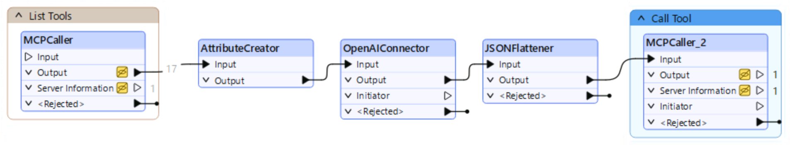
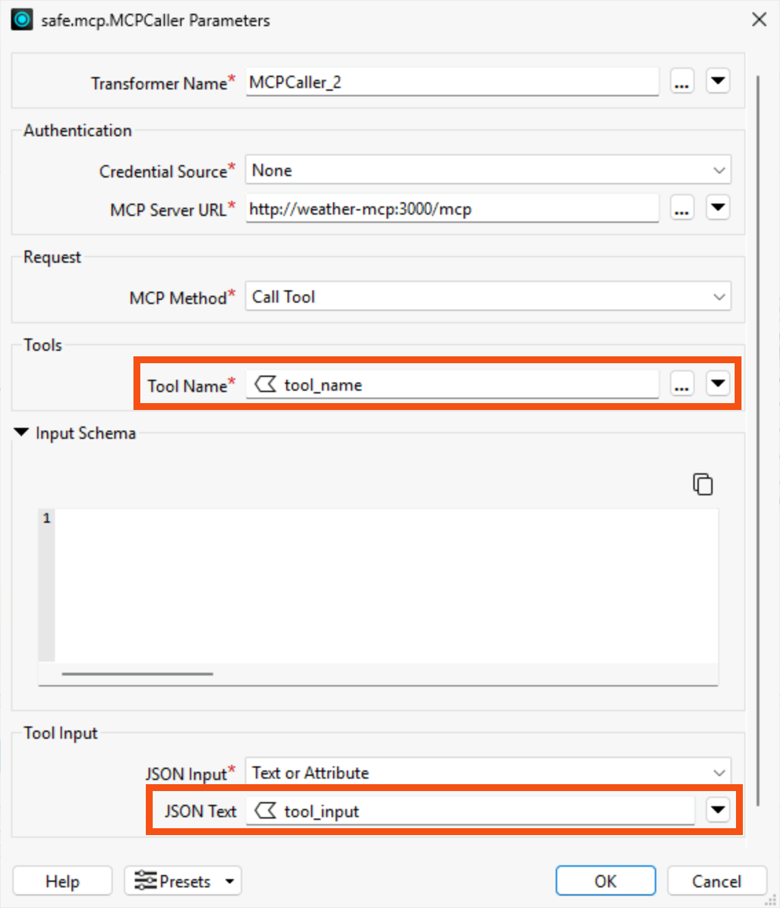
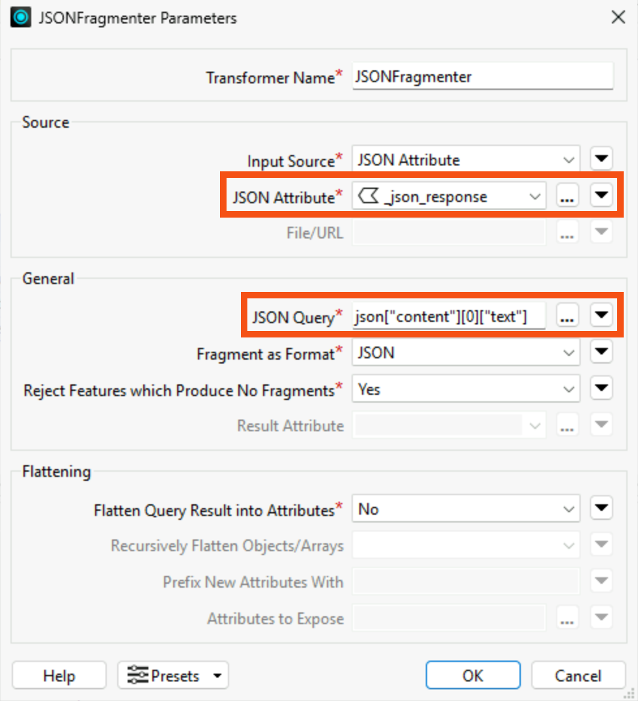

Learning Objectives
After completing this lesson, you'll be able to:
- Describe how a dynamic MCP workflow passes an AI connector's tool selection to an MCPCaller.
- Call an MCP tool dynamically using attributes from an AI connector.
- Describe the structure of an MCP tool's JSON response.
- Extract an MCP tool's output from its JSON response.
In this lesson, you will:
- Optional: Watch a demonstration video (if you have not attended the live training).
- Scroll down to read the activity instructions below and follow the steps in your lab.
- Complete the quiz at the end of this lesson.
- Click 'Next' to mark the lesson complete.
Resources
- FME and MCP Strigo training lab with Weather MCP server
- If you're taking a live, online training course, you will have access to the lab within the live event. Please do not request an on-demand lab unless you are working on the course materials outside of the live, online course time.
- If you're taking the course on-demand, please request an MCP and FME on-demand lab to work through the exercises.
- Starting workspace | C:\FMEData\Workspaces\MCPandFME\UseAIToSelectMCPTools-complete.fmw
- Complete workspace | C:\FMEData\Workspaces\MCPandFME\DynamicallyCallMCPTools-complete.fmw
Dynamic Tool Calls
In the previous lesson, an AI connector analyzed the List Tools response and selected a tool for the user's request. To complete the workflow, a second MCPCaller uses Call Tool to execute that tool, passing in the tool name and inputs from the AI output. The second MCPCaller returns a structured output that the rest of the workspace can continue processing.
Together, the full workflow looks like this: an MCPCaller lists the tools, an AI connector selects the tool and formats its input, and a second MCPCaller calls the selected tool.

This approach means the workspace doesn't need an MCPCaller for each MCP tool, and you don't need to update it each time a new tool is added to the MCP server or a tool's inputs change. AI enhances the workflow by dynamically discovering and evaluating tools, making it adaptable as the MCP server evolves.
The MCP Tool Response
When an MCP server runs a tool, it returns a result in JSON. With Include Response JSON enabled, the MCPCaller stores this result in the _json_response attribute. The result follows the structure the MCP specification defines:
- content is an array of content items. Each item has a type, such as text, and the data for that type. A text item stores the tool's output in its text property.
- isError is true when the tool ran but reported an error, for example because the input didn't match what the tool expects.
Many tools return their data as JSON written inside the text property. Parsing the response is a two-stage process: first, extract the text from the content array, then parse that text as JSON to get the individual values. FME's JSON transformers, such as the JSONFragmenter, JSONFlattener, and JSONExtractor, handle both stages.
The content array has the same shape for every tool, but the JSON inside the text depends on which tool was called. Two tools on the same server can return completely different fields, so a dynamic workflow has to handle more than one response structure.
Exercise

This exercise continues where the Use AI to Select MCP Tools exercise left off. You should complete the previous exercise before continuing with this one.

Frank, a GIS Administrator, has a workspace in which an AI connector selects a weather MCP tool and formats its input from a user's request. He now needs a single MCPCaller to call whichever tool the AI selects and return the weather data, so the workspace keeps working as tools are added to the server. Eventually, Frank can integrate this workspace with his future utility data MCP server to provide real-time weather metrics alongside some utility data workflows.
In this exercise, you will:
- Configure the Call Tool MCPCaller to call the tool selected by an AI connector.
- Parse the MCP tool's JSON response with a JSONFragmenter.
- Run the dynamic workflow and inspect how FME passes data between the MCP calls and the AI connector.
1) Open Starting Workspace
- Continue with your workspace from the Use AI to Select MCP Tools exercise in FME Workbench 2026.2 or newer.
- If you do not have your workspace from the previous exercise, you can open the starting workspace (C:\FMEData\Workspaces\MCPandFME\UseAIToSelectMCPTools-complete.fmw).
2) Edit the Call Tool MCPCaller
The Call Tool MCPCaller takes the tool_name and tool_input attributes from the OpenAIConnector output in place of a hardcoded tool.
- Move the Call Tool MCPCaller and connect its Input port to the JSONFlattener Output port.

- Open the MCPCaller parameters.
- From the Tool Name drop-down, select the tool_name attribute.
- You will receive an error stating "Error extracting input schema: Can not parse the given JSON." Click OK. You receive this because you no longer hardcode the tool into the transformer, and the MCPCaller can't read the input schema in advance.
- The Input Schema will now be blank, as the MCPCaller doesn't know which tool it will be calling.
- Under Tool Input, from the JSON Text drop-down, select the tool_input attribute.

3) Add a JSONFragmenter
The MCPCaller returns structured JSON containing the MCP tool's response. To extract specific values into attributes, you need to parse the JSON.
- Connect a JSONFragmenter to the Call Tool MCPCaller Output port. Open its parameters.
- Configure the following parameters:
- JSON Attribute: _json_response
- JSON Query:
json["content"][0]["text"]
- This query extracts the text of the first content item. It won't parse everything into individual attributes, but it gives you a start, and you'll be able to see the response weather data as JSON easily.
- Click OK.

4) Run the Workspace
- Run the entire workspace. FME will prompt you for the user request to the MCP server.
- You can either leave the default value or provide a different query.
- If you choose to provide a different query, make sure it fits the context of the weather MCP server's tools.
- Inspect output caches throughout your workspace to see how FME handles the request, input, and resulting data through the two MCP calls and the AI connector.
- Inspect the JSONFragmenter cache and the _json_response attribute, which contains the weather MCP response information.
- To continue working with the data, you will need to do additional JSON extraction to get the weather information as FME attributes.
- Save your final workspace.
You've connected to the weather MCP server, listed the server's available MCP tools, and called tools, both statically and dynamically. Throughout these exercises, you used FME as an MCP client, connecting to the MCP server, calling tools, and receiving MCP responses.
Tips and Tricks: Use the JSON Response in Your Workspace
- To turn one tool's JSON response into attributes, add a JSONFlattener after the JSONFragmenter, set its JSON Document to _json_response, and add the attributes you need under Attributes to Expose. For a forecast request, these include current.temperature_2m and current_units.temperature_2m.
- Attributes to Expose is set when you build the workspace, so the exposed attributes only match responses from tools that return them. Each MCP tool returns a different structure, so this approach isn't dynamic.
- To build the schema at run time from whatever attributes a response contains, use the SchemaScanner. It is covered in Construct Schema Dynamically with the SchemaScanner, part of the FME Form Advanced learning path.